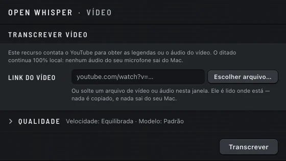

Além do ditado, o Open Whisper transcreve um vídeo do YouTube pelo link, ou um arquivo de vídeo ou áudio que está no seu computador. Tudo acontece na janela de vídeo: você entrega o vídeo, ela devolve o texto, e você copia ou salva como texto ou legendas.
A janela de vídeo
- Abra o menu do Open Whisper, na barra de menus (Mac) ou na área de notificação (Windows).
- Escolha Transcrever vídeo do YouTube…. A mesma janela também aceita arquivos do computador.
A janela tem o título Transcrever vídeo. Ela traz o campo Link do vídeo, o botão Escolher arquivo… e a seção Qualidade, fechada até você abrir. Dá para redimensionar a janela; só a caixa da transcrição rola.
No alto, a janela mostra um aviso:
Mac
Este recurso contata o YouTube para obter as legendas ou o áudio do vídeo. O ditado continua 100% local: nenhum áudio do seu microfone sai do Mac.
Windows
Este recurso contata o YouTube para obter as legendas ou o áudio do vídeo. O ditado continua 100% local: nenhum áudio do seu microfone sai do PC.
Um link usa a rede; um arquivo do seu computador, não. Privacidade lista cada uso da rede.




A partir de um link do YouTube
O Open Whisper chega ao YouTube pelo yt-dlp, uma ferramenta gratuita de outro projeto. Você instala uma vez. O app nunca instala nem atualiza o yt-dlp por você, e um arquivo do computador nunca precisa dele.
Mac
Instale com o Homebrew:
brew install yt-dlpPara atualizar: brew upgrade yt-dlp.
Windows
Instale com o winget, no Prompt de Comando ou no PowerShell:
winget install yt-dlp.yt-dlpPara atualizar: winget upgrade yt-dlp.yt-dlp. Uma cópia instalada pelo Scoop ou pelo Chocolatey também é encontrada.
O Open Whisper precisa do yt-dlp 2025.01.01 ou mais novo. Ele confere quando a janela abre e a cada vez que você aperta Transcrever. Se o yt-dlp falta ou está velho demais, a janela avisa e mostra o comando a rodar. O YouTube muda com frequência; quando links que funcionavam começam a falhar, atualize o yt-dlp primeiro.
- Copie o link do vídeo. Se a área de transferência tem um link de vídeo quando a janela abre, o campo já vem preenchido.
- Cole o link em Link do vídeo.
- Aperte Enter ou clique em Transcrever.
O link tem que ser de um vídeo só: youtube.com/watch?v=…, youtu.be/…, ou um link de Shorts, de incorporação (embed) ou /live/. Playlists, canais, páginas com @, buscas e outros sites são recusados antes de qualquer coisa começar.
A partir de um arquivo do computador
- Clique em Escolher arquivo…. O painel abre na pasta Filmes (Mac) ou Vídeos (Windows).
- Escolha o arquivo. A transcrição começa na hora.
Ou arraste o arquivo do Finder ou do Explorador e solte na janela. Um arquivo por vez: se você soltar vários, a janela diz Um arquivo por vez — foram soltos ….
O arquivo é lido onde está. Nada é copiado, nada é gravado ao lado dele, e nada sai do computador. Só o som é usado: a faixa de áudio principal, com até 3 horas.
| Contêiner | Áudio que ele lê |
|---|---|
| MP4, M4A, MOV, 3GP | AAC, ALAC, PCM, MP3 |
| MKV, WebM | Vorbis, FLAC, AAC, MP3, PCM |
| OGG | Vorbis, FLAC |
| MP3, FLAC, WAV, AIFF, CAF | o áudio do próprio arquivo |
Recusados, com o nome do que falta: áudio Opus (em WebM, MKV ou OGG), áudio AC-3, E-AC-3 e DTS, e os contêineres AVI, WMV e ASF. Exporte o arquivo de novo como MP4 ou M4A com AAC, ou como MP3, FLAC ou WAV, e ele funciona.
Legendas ou este dispositivo
Um link de vídeo pode ser transcrito de dois jeitos. O Open Whisper pergunta, a cada vídeo, e nunca decide por você.
- Quando o vídeo tem legendas: Este vídeo tem legendas. Usar as legendas é quase instantâneo. Escolha Usar as legendas, ou Transcrever neste dispositivo mesmo assim para o Open Whisper ouvir o áudio ele mesmo.
- Quando não tem:
Mac
Este vídeo não tem legendas utilizáveis. O Open Whisper pode transcrever o áudio aqui no seu Mac — isso baixa o áudio e leva alguns minutos. Escolha Transcrever neste dispositivo, ou Cancelar.
Windows
Este vídeo não tem legendas utilizáveis. O Open Whisper pode transcrever o áudio aqui no seu PC — isso baixa o áudio e leva alguns minutos. Escolha Transcrever neste dispositivo, ou Cancelar.
Legendas escritas por uma pessoa têm preferência sobre as automáticas. Se você fixou um Idioma nos Ajustes, as legendas nesse idioma vêm primeiro; se não, as do idioma original do vídeo. Neste dispositivo, o áudio é baixado para a memória, transcrito e descartado; ele nunca é salvo.
Um arquivo é sempre transcrito neste dispositivo: não há o que escolher.
Qualidade
Abra Qualidade para ver duas escolhas. Fechada, ela mostra as duas numa linha: Velocidade: … · Modelo: ….
Velocidade tem três opções. Precisa é o padrão.
| Velocidade | O que a janela diz |
|---|---|
| Rápida | A mais veloz. Em trechos difíceis erra mais, e um trecho que sai ruim é refeito. |
| Equilibrada | Erra menos que a Rápida e, como refaz menos trechos, muitas vezes termina antes dela. |
| Precisa | A mais cuidadosa: o melhor que o modelo escolhido consegue, e a mais lenta. |
Modelo oferece os mesmos quatro modelos do ditado, escolhidos à parte. O padrão é o embutido. Escolher um que não está no computador faz o download primeiro: Baixando o modelo… isso pode demorar. Veja Modelos.
As duas escolhas ficam guardadas e também são o ponto de partida da linha de comando. Elas nunca mudam o ditado. O idioma vem de Idioma, nos ajustes: fixe-o se você sabe o idioma do vídeo.
Progresso e cancelamento
A seção Progresso mostra a porcentagem, uma barra e a etapa atual: Consultando o vídeo…, Baixando as legendas…, Baixando o áudio…, Preparando o áudio…, Transcrevendo neste dispositivo….
- Cancelar para o trabalho em cerca de dois segundos. O que já foi transcrito fica, marcado como parcial.
- Se você ditar enquanto um vídeo roda, o vídeo espera: Em pausa enquanto você dita — continua sozinho.
- Repetição detectada — refazendo a transcrição do início… quer dizer que o modelo ficou preso repetindo a mesma coisa e o Open Whisper recomeçou. Você não precisa fazer nada.
- O Open Whisper transcreve um vídeo por vez. Espere o atual terminar, ou cancele, antes de começar outro.
- Enquanto um vídeo roda, o menu mostra a porcentagem ao lado de Transcrever vídeo do YouTube…. Sair do app pede confirmação: Uma transcrição de vídeo está em andamento. Se você sair agora, ela será perdida. Escolha Continuar ou Sair mesmo assim.
A transcrição
Uma linha diz de onde veio o texto: Legendas escritas por uma pessoa, Legendas geradas automaticamente pelo YouTube ou Transcrito neste dispositivo pelo Open Whisper. Depois pode vir um aviso:
- Transcrição parcial — o trabalho foi interrompido, mas nada do que já saiu foi perdido.
- Trechos repetidos em excesso foram reduzidos. Costuma acontecer com música ou silêncio longo.
- Nenhuma fala encontrada neste vídeo.
Quando transcreve no dispositivo, o Open Whisper deixa de fora as linhas que ouviu sobre silêncio ou ruído sem voz, e as linhas de crédito de legenda que o modelo às vezes inventa. As legendas do YouTube ficam exatamente como são.
Formato
- Texto: um cabeçalho curto (título, canal, data, duração, link ou arquivo, idioma, origem) e depois o texto em parágrafos.
- Legendas (SRT): linhas com tempo, para players e editores de vídeo.
- Legendas (VTT): linhas com tempo para a web, com o cabeçalho como nota.
Copiar e salvar
- Copiar põe a transcrição, no formato escolhido, na área de transferência: Copiado.
- Salvar grava o arquivo na hora, sem perguntar, com o título do vídeo como nome. Ele nunca sobrescreve: um segundo arquivo vira
Título (2).txt. A janela diz Salvo em …, seguido do caminho. - Salvar como… pergunta onde, começando pela pasta Downloads. Cancelar não grava nada.
Mac
Salvar grava em ~/.open-whisper/transcripts/. Essa pasta fica oculta no Finder: depois de salvar, clique em Mostrar no Finder, ou aperte ⇧⌘G no Finder e digite ~/.open-whisper/transcripts.
Windows
Salvar grava em %USERPROFILE%\.open-whisper\transcripts\. Depois de salvar, clique em Mostrar no Explorador para abrir a pasta.
Fechar a janela
Se você fechar a janela antes de copiar ou salvar, ela pergunta: Fechar sem copiar nem salvar? A transcrição continua disponível ao reabrir esta janela. Escolha Voltar ou Fechar mesmo assim. A transcrição espera na janela até você começar outra, ou sair do app.
Mensagens e o que fazer
| Mensagem | Causa | O que fazer |
|---|---|---|
| Isso não é o link de um vídeo do YouTube. Cole o link de um vídeo — playlists e canais não valem. | O link não é de um vídeo do YouTube. | Abra o próprio vídeo e copie o link dele. |
O yt-dlp não está instalado. Instale com: brew install yt-dlp (Mac) ou winget install yt-dlp.yt-dlp (Windows) | Falta o yt-dlp. | Rode o comando e tente de novo. |
O yt-dlp instalado é antigo demais para funcionar. Atualize com: brew upgrade yt-dlp (Mac) ou winget upgrade yt-dlp.yt-dlp (Windows) | O yt-dlp é anterior a 2025.01.01. | Rode o comando e tente de novo. |
| Este vídeo não está disponível — pode ser privado, ter sido removido, ou nunca ter existido. | O vídeo não abre. | Confira o link num navegador. |
| Este vídeo tem restrição de idade e não pode ser acessado desta forma. | O vídeo tem restrição de idade. | Não dá com o Open Whisper. |
| Este vídeo não está disponível na sua região. | O vídeo está bloqueado onde você está. | Não dá da sua região. |
| Transmissões ao vivo não são suportadas. Tente de novo quando a gravação estiver publicada. | O vídeo está ao vivo. | Espere a gravação. |
| Este vídeo passa do limite de 3 horas. Vídeos mais longos não cabem na memória com segurança. | O vídeo ou arquivo passa de 3 horas. Para um arquivo, a frase é a mesma. | Corte em partes de menos de 3 horas. |
| Este vídeo não tem legendas utilizáveis. | Você escolheu as legendas e nenhuma serve. | Escolha Transcrever neste dispositivo. |
| Este vídeo não oferece um formato de áudio que o Open Whisper saiba decodificar. | O YouTube não oferece um áudio que o app saiba ler. | Não dá para este vídeo. |
| O YouTube está limitando os acessos agora. Espere alguns minutos e tente de novo. | Muitos pedidos em pouco tempo. | Espere alguns minutos. |
| Sem conexão com a internet. | Um link precisa da rede. | Conecte-se e tente de novo. |
| Não foi possível decodificar o áudio deste vídeo. | O áudio do vídeo não pôde ser lido. | Tente de novo. Se repetir, atualize o yt-dlp. |
| A transcrição falhou. O que já tinha sido transcrito continua abaixo. | O motor parou no meio. | Copie ou salve o que já saiu e tente de novo. |
| O Open Whisper transcreve um vídeo por vez. Espere o atual terminar ou cancele-o. | Já há um vídeo em andamento. | Espere, ou aperte Cancelar. |
| Não foi possível salvar em …. A transcrição continua aqui — use Copiar. | O arquivo não pôde ser gravado. | Use Copiar, ou Salvar como… em outro lugar. |
| Falhou por um motivo que o Open Whisper não reconhece. O yt-dlp disse: … | O yt-dlp relatou algo novo. | Atualize o yt-dlp. Se continuar, relate o problema. |
| O Open Whisper não consegue decodificar o áudio deste arquivo (…). Exporte como MP4/M4A com AAC, ou como MP3, FLAC ou WAV, e tente de novo. | O áudio ou o contêiner do arquivo não é suportado. | Exporte de novo num desses formatos. |
| Não dá para ler este arquivo: não existe nada nesse caminho. | O arquivo mudou de lugar ou foi apagado. | Escolha o arquivo de novo. |
| Esse caminho é uma pasta, não um arquivo de mídia. O Open Whisper transcreve um arquivo por vez. | Você indicou uma pasta. | Escolha um arquivo dentro dela. |
| Não dá para ler este arquivo: sem permissão. Confira as permissões do arquivo e tente de novo. | A sua conta não pode ler o arquivo. | Confira as permissões do arquivo. |
| Este arquivo está vazio ou truncado — não há nada nele para decodificar. | O arquivo está vazio ou incompleto. | Consiga uma cópia completa. |
| Este arquivo não tem faixa de áudio, então não há o que transcrever. | O arquivo tem imagem, mas não tem som. | Use um arquivo com som. |
| Não dá para ler este arquivo: …. | Outro erro de leitura, descrito depois dos dois-pontos. | Confira o disco ou o arquivo e tente de novo. |
| Não foi possível salvar a escolha: … | Uma escolha de Qualidade não foi salva. | Escolha de novo. |
Outros problemas e as soluções estão em Solução de problemas.